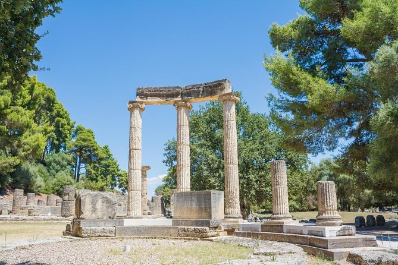
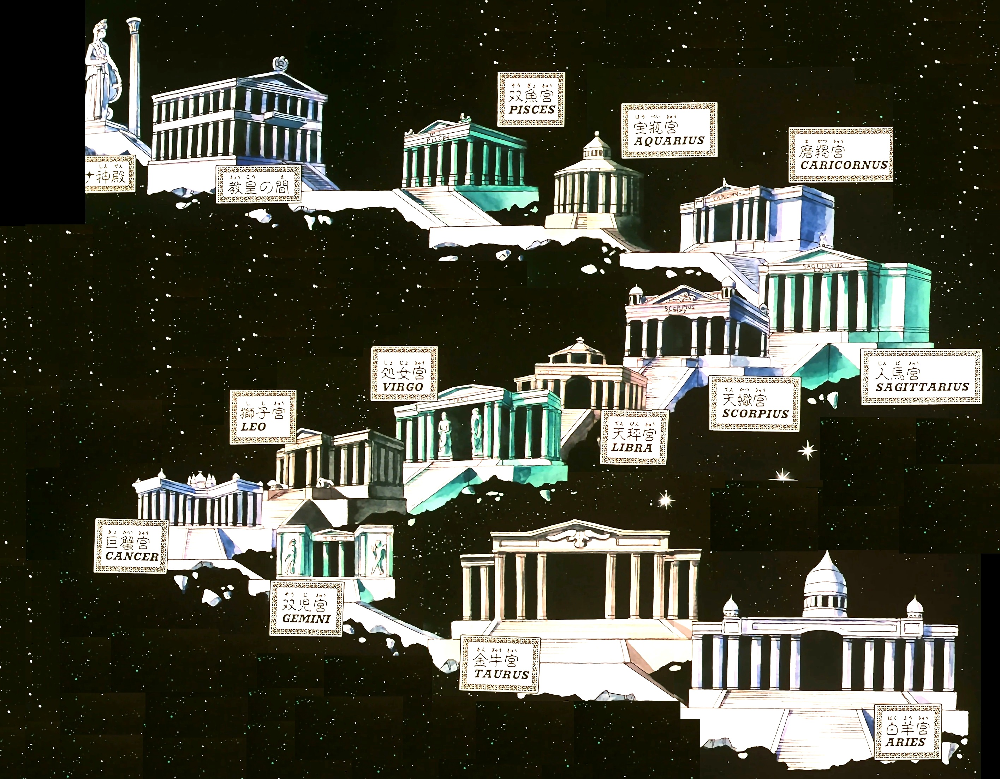

¡Descubre Grecia, la cuna de la civilización! Explora la fascinante historia y la belleza natural de Grecia en un viaje inolvidable, desde las majestuosas ruinas de la antigüedad hasta las impresionantes islas griegas, cada rincón ofrece una experiencia única. ¡Y quién sabe, tal vez descubras el legendario lugar donde Seiya de Pegaso obtuvo su Cloth de Pegaso! Únete a nosotros y vive tu propia aventura en la tierra de los dioses y héroes. ¡Grecia te espera!
Acrópolis de Atenas
Un símbolo emblemático de la civilización griega antigua, la Acrópolis es una colina rocosa que alberga algunos de los monumentos más famosos del mundo, incluyendo el Partenón, el Erecteion y el Templo de Atenea Niké.

Olympia
El lugar de nacimiento de los Juegos Olímpicos de la antigüedad, donde atletas de toda Grecia competían en honor a Zeus. Olympia cuenta con ruinas antiguas, incluyendo el Templo de Zeus y el Estadio Olímpico.

Santuario de Saint Seiya (¡de broma!)
Un lugar legendario donde se dice que los Santos de bronce lucharon contra los 12 Santos dorados para salvar la vida de la diosa Atena encarnada Saori Kido. Se dice que está ubicado en una dimensión paralela, accesible solo para aquellos con el corazón valiente y la determinación de un verdadero Santo de Atena.
Itinerario de 5 días y 4 noches en Grecia
Día 1: Atenas
- Llegada a Atenas y traslado al hotel.
- Visita a la Acrópolis de Atenas para explorar el Partenón y otros monumentos antiguos.
- Recorrido por el barrio de Plaka para disfrutar de su encanto histórico y sus tiendas tradicionales.
Día 2: Atenas, parte 2: ahora más Atenas que nunca
- Visita al Museo de la Acrópolis para conocer más sobre la historia y la arquitectura de la antigua Grecia.
- Paseo por el Mercado Central de Atenas para experimentar la vida cotidiana de la ciudad.
- Tiempo libre para cenar en una taberna griega y probar platos locales.
Día 3: Olympia
- Salida hacia Olympia en autobús o coche de alquiler.
- Exploración del Museo Arqueológico de Olympia para ver artefactos antiguos y estatuas de la antigüedad.
- Alojamiento en un hotel en Olympia.
Día 4: Santuario de Saint Seiya (broma) y Regreso a Atenas
- ¡Recorrido por el "santuario de Saint Seiya" (broma)"!
- Regreso a Atenas en autobús o coche de alquiler.
- Tarde libre en Atenas para hacer compras o relajarse.
Día 5: Partida
- Traslado al aeropuerto para tomar el vuelo de regreso a casa.
Costos de Viaje en Grecia
- Traslados: Los traslados pueden costar entre 20 a 50 dólares por trayecto, dependiendo del medio de transporte elegido.
- Hospedaje: Los precios oscilan entre 50 a 150 dólares por noche, según la ubicación y categoría del alojamiento.
- Entradas a sitios turísticos: Las entradas suelen estar entre 10 a 20 dólares por persona.
- Alimentación: Se estima un gasto de 15 a 30 dólares por comida, dependiendo del lugar y el tipo de restaurante.